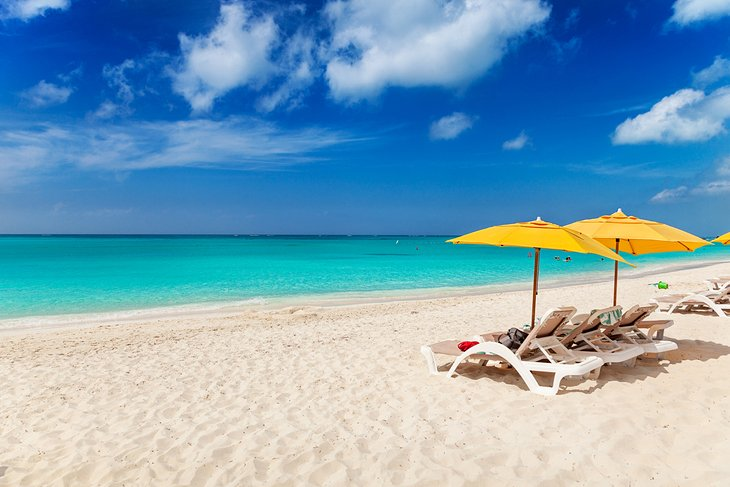
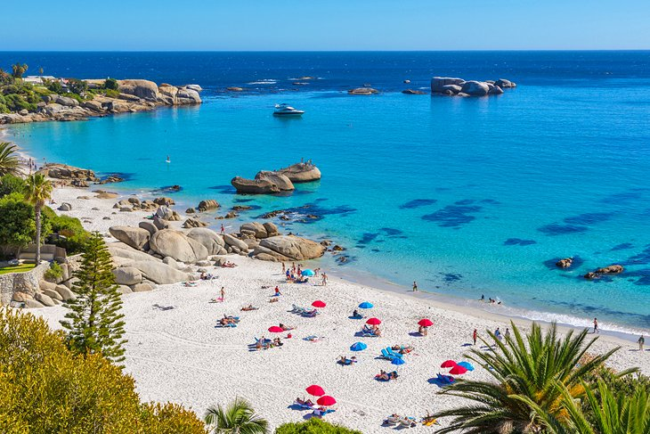
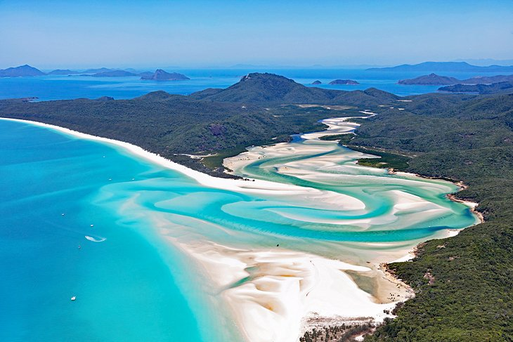

TOP 5 BEACH AROUND THE WORLD
The beach always gives you the feeling of being relaxed and satisfied. That is just the calming sound of water, but being physically near the beach, hearing the crashing waves and feeling the cool breeze of the ocean is somehow therapeutic. That said, a day on the beach is tantamount to relaxation.

1. Matira Beach, Bora Bora, French Polynesia
The French Polynesian isle of Bora Bora, floating in an archipelago in the South Pacific, is as close to tropical paradise perfection as you can get. Surrounded by a crystal-clear and super calm lagoon that boasts one of the world's most brilliant turquoise and marbled azure water, the island is home to white-sand beaches and a lush interior of pointy volcanic peaks.
2. Grace Bay Beach, Turks and Caicos
Located just southeast of The Bahamas, Turks and Caicos are a group of some 40 islands that remain a British Overseas Territory. World renowned Grace Bay Beach, on its main island of Providenciales, is one of the world's most exquisite stretches of white sand. Running for eight kilometers in a half crescent shape, it is backed by crystal-clear turquoise water, where one of the world's largest coral reef systems still thrives just offshore.
3. Camps Bay Beach, Cape Town, South Africa
Just a 10-minute drive from downtown Cape Town in South Africa, Camps Bay Beach is simply stunning when it comes to scenery. The water here is of the turquoise and emerald streaked variety, backed by darker blues and dependent on the seasons, but it is deceptively cold. Still, in summertime, the public beach draws hordes of swimsuit clad sun worshippers, and many locals brave the waves long enough to at least cool off-the current here comes straight from Antarctica.
5. Railay Beach, Thailand
One of Thailand's most beautiful beaches, gorgeous Railay Beach sits isolated on a small peninsula that can only be reached by longtail boat-a journey that is well worth taking. Upon arrival, you'll find shimmering, powdery, soft white sand, and a picture-perfect turquoise lagoon, all surrounded by giant limestone monoliths (both in and out of the water), dense jungle, and cliffs and caves.
5. Whitehaven Beach, Queensland, Australia
Consistently rated one of the best beaches in Australia and the world, Whitehaven Beach is a beauty on an island off the Queensland coast at the edge of the Great Barrier Reef in Australia. Accessible only by boat, seaplane, or helicopter, it serves up seven-kilometers of glittering white silica sand backed by turquoise water.
OTHER 5 BEAUTIFUL BEACHES
Enjoy beautiful places in the world